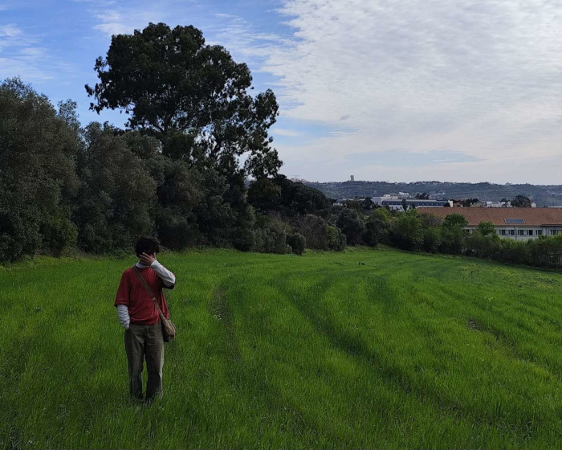
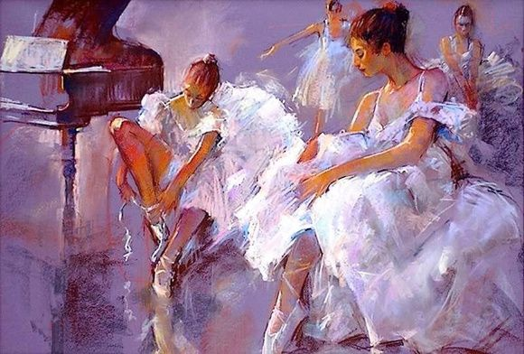
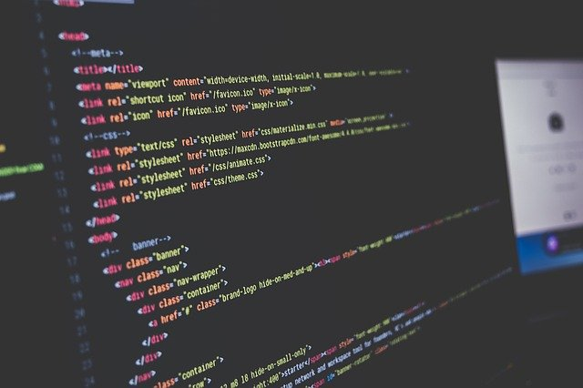
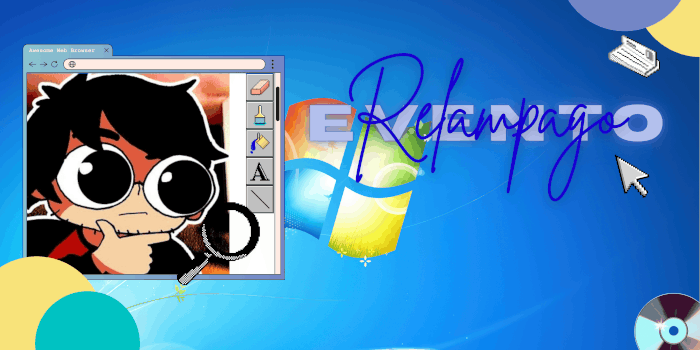
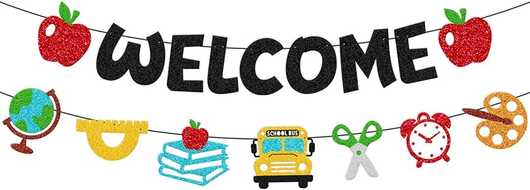

14/04/2026 - 15:50 | by @wastedjpg

Entãoooo eu conheci o Gemaplys lá em 2018 (pois é, faz OITO ANOS)
Eu assistia freneticamente o canal dele, sobretudo o GEMAREVIEW.
Acho que os meus favoritos são o do GTA SP, os do Coelho Sabido, o do BBB, todos da Sandy Junior
e por fim o lendário Seaman🔥🔥🔥
Mas o que sempre me trazia de volta não era nem o assunto, o Vito podia estar falando sobre qualquer coisa que eu estaria lá assistindo porque sinceramente eu me identifico muito com ele e a edição dele sempre me tira umas risadas que quase nenhum outro YouTuber tira (um dos poucos é o Sr.Wilson do ColôniaContraAtaca🙏)
Agora sobre mim, wastedJPG!
Me apresentando de verdade, meu nome é Luan, e eu amo desenhar e fazer música!!
Sobre minha personalidade: Talvez impressione alguns com isso mas pessoalmente eu sou bem quieto e calado.
Sou do tipo de pessoa que vai se abrindo o coração gelado aos poucos...
É só q eu penso (honestamente até demais) e costumo me deixar absorver as coisas antes de falar algo.
Eu nunca gostei muito de “fingir” uma personalidade, o que é contraditório porque eu meio que sou um camaleão em questão social, acho que deixo poucas pessoas realmente conhecerem quem sou de vdd.
Mas comparado a anos atrás, eu sou bem mais honesto comigo e com os outros...
Pra mim é mais confortável só ser real, mesmo que isso me torne um pouco difícil de ler às vezes:')
Agora sendo mais profundo,
Eu tenho Transtorno de Stress Pós-Traumático. Não é diagnosticado mas minha terapeuta concorda que tenho.
não acho que isso me defina mais, mas faz parte de como aprendi a enxergar o mundo.
É algo que faz parte de mim, mas não me domina.
Agora falando de coisa boa, eu tenho vários hobbies!!
desenhar, fazer música, tocar baixo. normalmente é onde eu consigo me entender melhor.
se algo é pesado demais ou complicado demais pra dizer diretamente, geralmente acaba virando outra coisa...
Agora pra fechar, meus personagens favoritossss!!
O Homem-Aranha do Tobey Maguire
O Izuku Midoriya de Boku no Hero (meu goat supremo)
Dipper de Gravity Falls
Oscar Peltzer de Acampamento de Verão
Eu acho que me conecto mais com personagens que são reflexivos, um pouco sobrecarregados pela vida, mas que continuam tentando mesmo assim.
E é isso que eu quero ser!
Obrigado a todos que leram esse post onde eu falei MUITOOO, e obrigado a todos que me acolheram e com quem criei ótimas amizades, especialmente meu mano Frozen mega irado brabão
13/04/2026 - 19:43 | by @vdz_1


oi galerinha do blog do gema, hoje eu nao sabia muito oque falar, e como a maioria de vcs tirando a yannke não me conhecem direito vim aqui falar um pouquinho sobre mim. meu nome é Davi, tenho 15 anos e tenho uma vida normal tirando o fato que tenho autismo, depressão, ansiedade social, tdah e mais alguns probleminhas aí, por isso pra mim é muito dificil conversar e me enturmar com todo mundo então fico mais quieto na minha observando o chat mesmo.
meu sonho é ser um youtuber e trazer um pouco de risada pro dia de todo mundo, eu também faço algumas musicas por diversao, eu faço diversos generos aí sem nenhuma pretenção. eu ja fiz muitas coisas na minha vida em que me arrependo, e tambem ja experimentei diversos tipos de atividades e esportes porem sempre fui meio mediocre em tudo. a primeira coisa que eu gostei realmente de fazer foi gravar e assistir videos, agora to gostando bastante desse mundo da musica tambem.
nesses ultimos anos da minha vida tenho estado bem desmotivado pra tudo, mas graças a terapia, remedios e minha incrivel namorada yannke eu to melhorando bastante e me sentindo muito melhor.
agora vou dizer 5 coisas que eu amo e 5 que eu odeio pra finalizar esse meu textinho cocozento, coisas que eu amo: yannke, batata, bleach, musica e youtube. coisas que eu odeio: ovo, brincadeiras sem graça, procastinação, preconceito e pessoas sem noção.
é isso aí, esse foi meu texto de introdução obrigado quem leu!!, se quiser me mandar uma mensagem pra me conhecer melhor e talvez uma amizade boa eu to disponivel.
12/04/2026 - 13:12 | by @nauta.html

Programação sempre foi meu sonho desde criança, acho que desde os meus 10 anos eu assistia um canal chamando Renzk, ele é um programador que faz jogos 3d bem idiotoes pro canal dele e eu sempre me divertia muito vendo todo o processo de fazer um jogo.
Esse meu gosto aumentou ainda mais quando eu descobri o canal do gemaplys, que tinha a mesma pegada só que com jogos 2d, a partir dali eu decidi que queria ser gamemaker.
Mas vamos ser sinceros, como caralhos eu iria conseguir um emprego sendo um dev indie sem experiência? foi aí que eu tive a ideia de continuar trabalhando com programção porém em outro rumo, e aqui estou.
Com o incrível canal do Gustavo Guanabara, eu consegui começar nessa área de desenvolvimento web, que por sinal ta sendo bem divertido.
É isso, só queria contar um pouquinho da minha vida, até amanhã!
11/04/2026 - 18:18 | by @iyannke


Evento relampagum
OIIII gente do blog legau XD, vim aki hoje pra comentar sobre a divulgasao e os eventos do servidurr taligaduuum, quero uma meta de 200 membrus para nossum servidor!!!!!! vou fazer um eventu relampago de divulgasoes, quem divulgar mais o servidur seja em outros servidores, por video, por grupo de amigus vai ganhar um cargo exlcusivo einnnn!!!!! taligadummmmm
esse foi o blog di hoji taligadum >:D
10/04/2026 - 22:11 | by @nauta.html

Eae pessoal do mal, esse é o primeiro post desse blog, uhuuul! Enfim, esse blog vai ser atualizado diariamente por algumas pessoas (mesmo q só eu tenha acesso a escrever no site) infelizmente, esse blog n é nada interativo, pq eu n sou um programador tão bom assim ainda, mas eu to fazendo o meu melhor :)
Espero q vcs gostem, a gente vai só postar nossas bobagens ou desabafos aqui, mas sempre fiquem ligados, ainda mais nossos amigos mais intimos
e não, eu não vou falar ainda quem q tem permissão de postar as coisas aqui muahahahaha (pq nem a gente sabe)
Única coisa q a gente sabe é q o vdz vai fazer um post aqui algum dia, pq ele ganhou na competição do enigma q rolou ontem (09/04). Enfim de novo, espero q curtam esse projetinho maluco, nauta out. *mic drop*